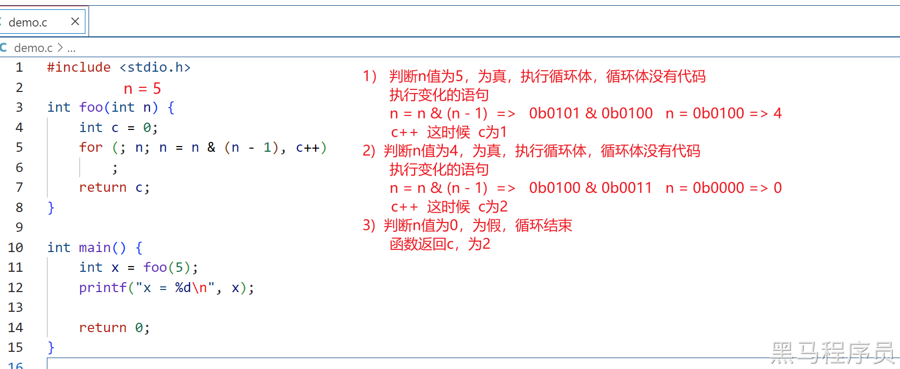
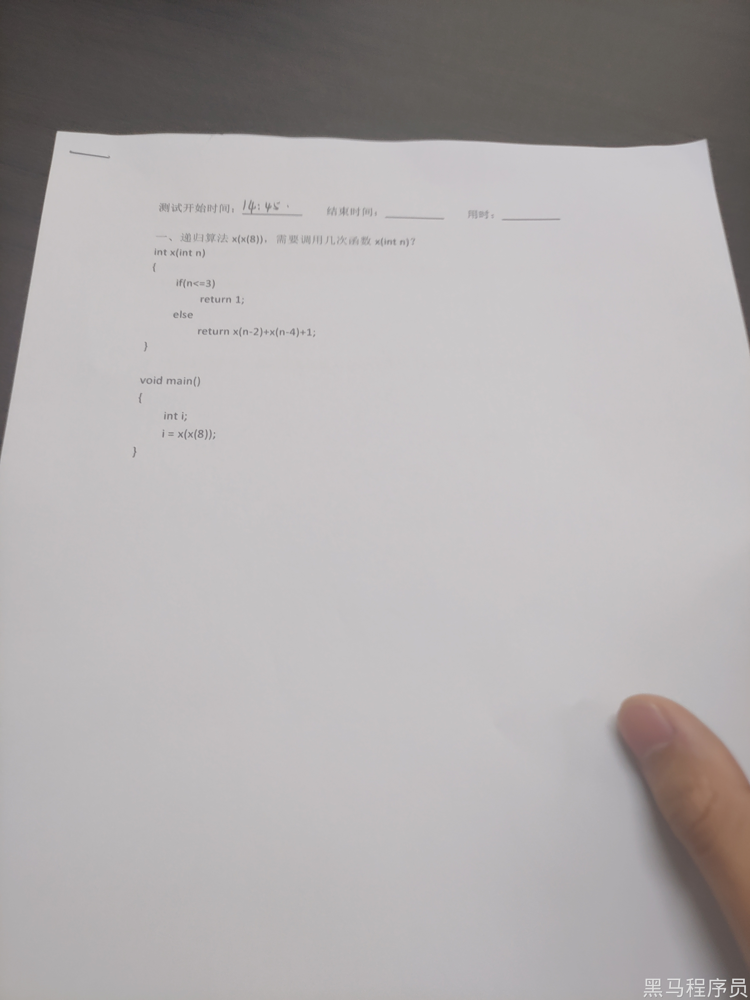
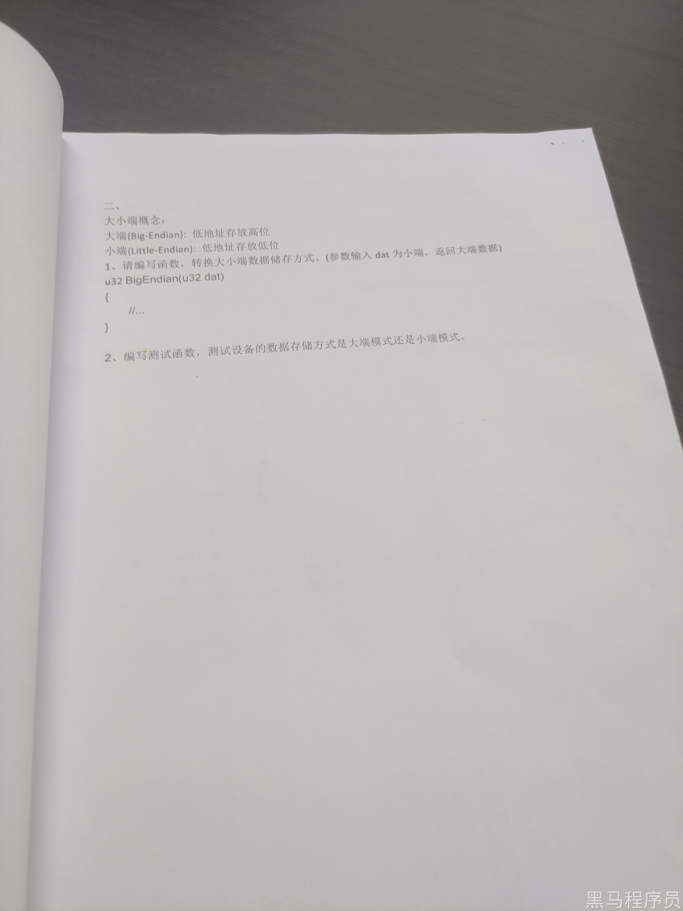
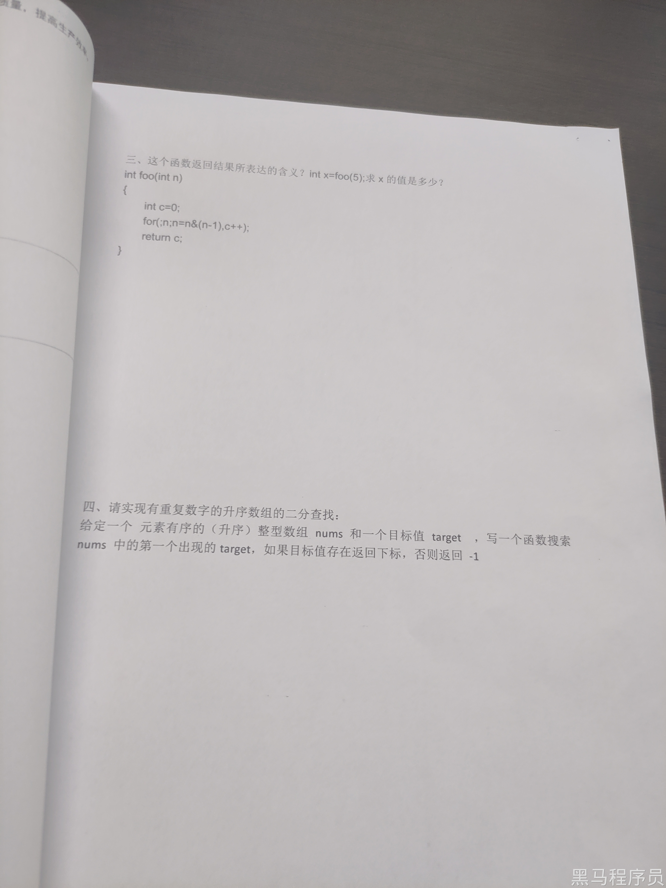

<!DOCTYPE lake>
<h2 data-lake-id="MFRRQ" id="MFRRQ"><span data-lake-id="uc1623ac5" id="uc1623ac5">问题</span></h2><ol list="u0d2d5367"><li data-lake-id="u85ac07f7" fid="u0078fb2e" id="u85ac07f7"><span data-lake-id="u19058cd7" id="u19058cd7">递归算法 </span><code data-lake-id="uea7957fd" id="uea7957fd"><span data-lake-id="ued992b79" id="ued992b79">x(x(8))</span></code><span data-lake-id="uaf04e474" id="uaf04e474">，需要调用几次函数 </span><code data-lake-id="u7a559241" id="u7a559241"><span data-lake-id="u87405851" id="u87405851">x(int n)</span></code><span data-lake-id="uc0299873" id="uc0299873">?</span></li></ol><span class="yuque-card-unsupported">[codeblock]</span><blockquote data-lake-id="ub6d79dce" id="ub6d79dce" style="padding-left: 2em"><p data-lake-id="u5204950f" id="u5204950f"><span data-lake-id="ue1393b5a" id="ue1393b5a">解析：</span></p><ol list="udfb81c63"><li data-lake-id="u5b7507c7" fid="u72b46883" id="u5b7507c7"><span data-lake-id="u6bbbef0f" id="u6bbbef0f">只要 n &lt;= 3, x() 函数就执行结束，算一次。</span></li><li data-lake-id="ucd964b36" fid="u72b46883" id="ucd964b36"><span data-lake-id="ud690faed" id="ud690faed">x(x(8))，拆成两次看，一次内侧，一次外侧。</span></li></ol><p data-lake-id="u90fd981c" id="u90fd981c"><span data-lake-id="u337d586c" id="u337d586c"> </span></p><p data-lake-id="u2b97d422" id="u2b97d422"><span data-lake-id="uc0a5874e" id="uc0a5874e">x(8) 为9次，x(9) 为9次，</span></p><p data-lake-id="u2bf316d3" id="u2bf316d3"><span data-lake-id="u93d5f1de" id="u93d5f1de">结果为 18</span></p></blockquote><p data-lake-id="u110c723a" id="u110c723a"><br/></p><a class="yuque-card-link" href="https://cdn.nlark.com/yuque/0/2023/jpeg/27903758/1689902885168-ad9390a4-1d8a-4c92-a3a5-2ccf48f8e584.jpeg" rel="noopener noreferrer" target="_blank">board：board</a><p data-lake-id="uc2a50d6c" id="uc2a50d6c"><br/></p><ol list="u0d2d5367" start="2"><li data-lake-id="ub0142de2" fid="u0078fb2e" id="ub0142de2"><span data-lake-id="u0405bed9" id="u0405bed9">大小端概念:</span></li></ol><p data-lake-id="u2f51497d" id="u2f51497d"><span data-lake-id="u3e31a42f" id="u3e31a42f">大端(Big-Endian):低地址存放高位</span></p><p data-lake-id="u06a5dc3a" id="u06a5dc3a"><span data-lake-id="u160a6c63" id="u160a6c63">小端(Little-Endian): 低地址存放低位</span></p><ol data-lake-indent="1" list="u9f27aec3"><li data-lake-id="u17e5f989" fid="uceb9a989" id="u17e5f989"><span data-lake-id="uf80822f8" id="uf80822f8">请编写函数，转换大小端数据储存方式。(参数输入 dat 为小端，返回大端数据)</span></li></ol><span class="yuque-card-unsupported">[codeblock]</span><ol data-lake-indent="1" list="u9f27aec3" start="2"><li data-lake-id="u45ac3881" fid="uceb9a989" id="u45ac3881"><span data-lake-id="u63b61252" id="u63b61252"> 编写测试函数，测试设备的数据存储方式是大端模式还是小端模式</span></li></ol><span class="yuque-card-unsupported">[codeblock]</span><ol list="u13b6d61b" start="3"><li data-lake-id="u560d18e9" fid="u279e39e8" id="u560d18e9"><span data-lake-id="u6be3b66c" id="u6be3b66c">这个函数返回结果所表达的含义? int x=foo(5);求x 的值是多少?</span></li></ol><span class="yuque-card-unsupported">[codeblock]</span><blockquote data-lake-id="u519feb03" id="u519feb03" style="padding-left: 2em"><p data-lake-id="uc309a132" id="uc309a132" style="text-indent: 2em"><span data-lake-id="ud93bc2a8" id="ud93bc2a8">结果为2.</span></p><p data-lake-id="uc4723445" id="uc4723445" style="text-indent: 2em"><code data-lake-id="udf6b0034" id="udf6b0034"><span data-lake-id="ud323ca83" id="ud323ca83">for(;n;n=n&amp;(n-1),c++);</span></code></p><p data-lake-id="uc07974b3" id="uc07974b3" style="text-indent: 2em"><span data-lake-id="u9e6997aa" id="u9e6997aa">n为判断条件，后面的为逻辑</span></p></blockquote><p data-lake-id="uffbf416c" id="uffbf416c" style="text-indent: 2em"></p><table class="lake-table" data-lake-id="WxZkv" hindent="2em" id="WxZkv" margin="true" style="width: 470px"><colgroup><col width="152"/><col width="250"/><col width="68"/></colgroup><tbody><tr data-lake-id="u576b5ad9" id="u576b5ad9"><td data-lake-id="u0d75fc9e" id="u0d75fc9e"><p data-lake-id="ud065ff49" id="ud065ff49"><span data-lake-id="u0d1f4bf6" id="u0d1f4bf6">n</span></p></td><td data-lake-id="ub46604be" id="ub46604be"><p data-lake-id="u55681455" id="u55681455"><span data-lake-id="u6036598a" id="u6036598a">n=n&amp;(n-1)</span></p></td><td data-lake-id="u9feea471" id="u9feea471"><p data-lake-id="u15b7a5e0" id="u15b7a5e0"><span data-lake-id="u179fb405" id="u179fb405">c</span></p></td></tr><tr data-lake-id="u08ca7ef5" id="u08ca7ef5"><td data-lake-id="u35df80de" id="u35df80de"><p data-lake-id="u7d2599a7" id="u7d2599a7"><span data-lake-id="u680a0232" id="u680a0232">5</span></p></td><td data-lake-id="u4f896958" id="u4f896958"><p data-lake-id="ue17caad8" id="ue17caad8"><span data-lake-id="u31256c40" id="u31256c40">n = 0b101 &amp; 0b100 = 0b100</span></p></td><td data-lake-id="u0c47aebc" id="u0c47aebc"><p data-lake-id="u00988bd1" id="u00988bd1"><span data-lake-id="u7eec7d41" id="u7eec7d41">1</span></p></td></tr><tr data-lake-id="u13d3cce6" id="u13d3cce6"><td data-lake-id="u835c6fbc" id="u835c6fbc"><p data-lake-id="u67139da1" id="u67139da1"><span data-lake-id="u58a8f303" id="u58a8f303">0b100</span></p></td><td data-lake-id="u04933659" id="u04933659"><p data-lake-id="u02b100bb" id="u02b100bb"><span data-lake-id="uf82e0564" id="uf82e0564">n = 0b100 &amp; 0b011 = 0</span></p></td><td data-lake-id="u13ac6984" id="u13ac6984"><p data-lake-id="ufff51e5e" id="ufff51e5e"><span data-lake-id="u5a763d4d" id="u5a763d4d">2</span></p></td></tr></tbody></table><ol list="ud5e19f33" start="4"><li data-lake-id="u3cc5eb2f" fid="u304cf90c" id="u3cc5eb2f"><span data-lake-id="u4469577b" id="u4469577b">请实现有重复数字的升序数组的二分查找:</span></li></ol><p data-lake-id="u34e05482" id="u34e05482"><span data-lake-id="u44d80c73" id="u44d80c73">给定一个 元素有序的 (升序) 整型数组 nums 和一个目标值 target ，写一个函数搜索</span></p><p data-lake-id="uaeff22b2" id="uaeff22b2"><span data-lake-id="u11dff355" id="u11dff355">nums中的第一个出现的 target，如果目标值存在返回下标，否则返回 -1.</span></p><span class="yuque-card-unsupported">[codeblock]</span><h2 data-lake-id="OB6w8" id="OB6w8"><span data-lake-id="u710ea234" id="u710ea234">源文件</span></h2><p data-lake-id="u56a40207" id="u56a40207"></p><p data-lake-id="u2924d009" id="u2924d009"></p><p data-lake-id="ue13c6f73" id="ue13c6f73"></p>